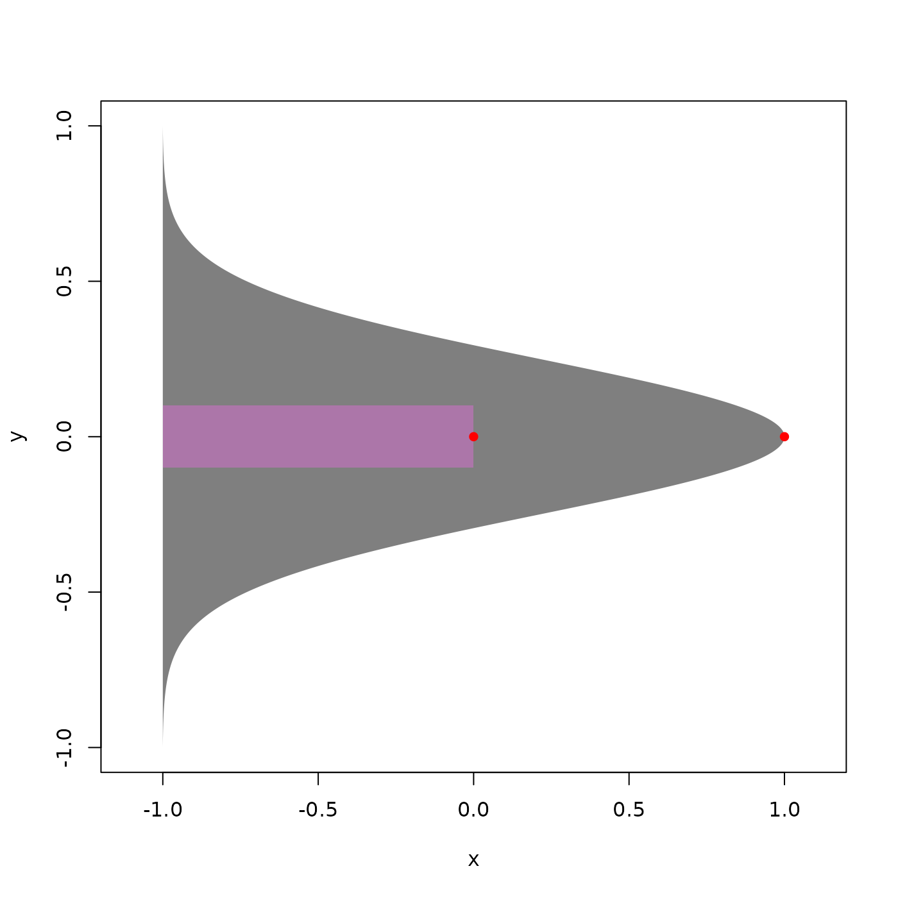
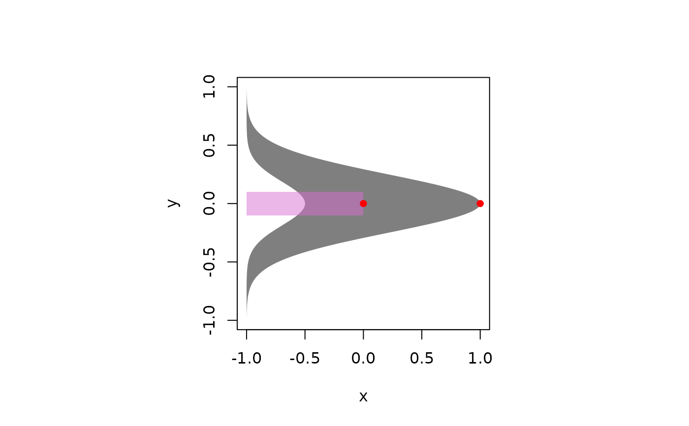
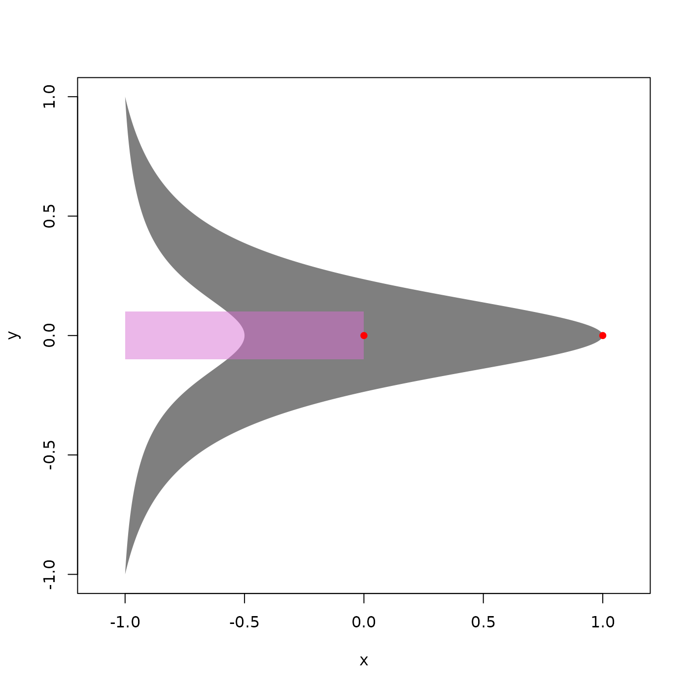
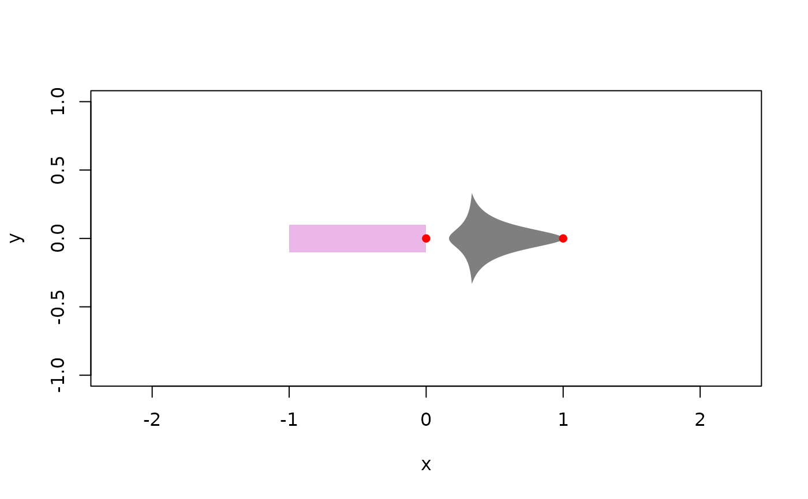
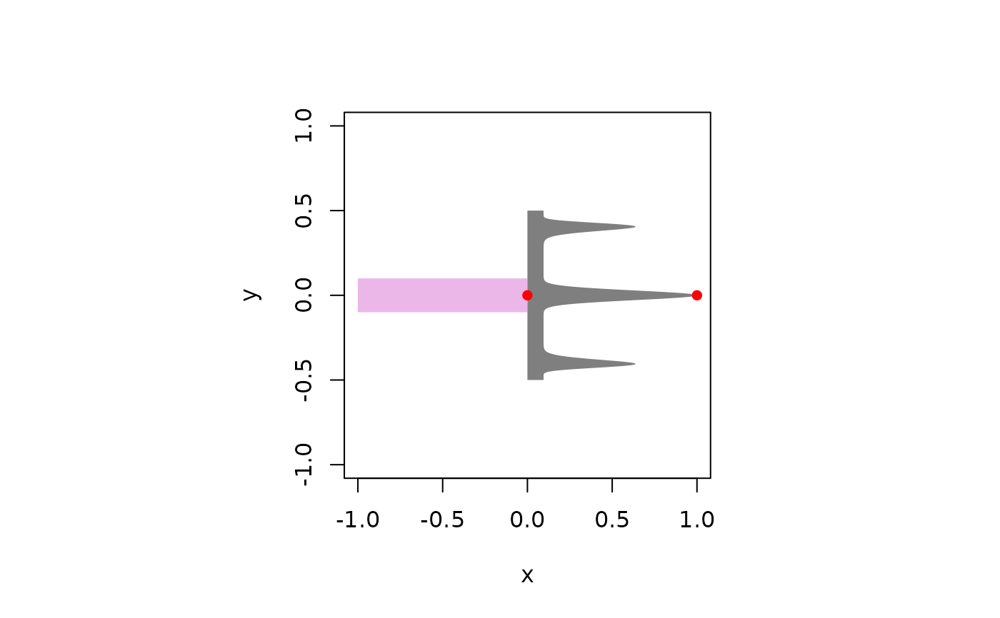

Make arrowheads with any function
Arguments
- .fun
a function (defaults to dnorm)
- lower_bound
lowest value passed to .fun
- upper_bound
highest value passed to .fun
- ...
arguments passed to .fun
- base_width
If closed, size of feet
- thickness
If closed, thickness of shape (can be negative)
- closed
make polygon closed
- minimum_value
smallest value in function
- rotate
rotation angle in radians
- rescale
a single value or 2-length vector for scaling in x and y
- nudge
a single value or 2-length vector for nudging in x and y
- transformations
a vector of transformation functions
- n
number of points in polygon
- plot
plot arrowhead if TRUE
Examples
# A normal distribution
xy <- arrow_head_function(dnorm, plot = TRUE)

# if closed = FALSE, set thickness and base_width
xy <- arrow_head_function(dnorm, plot = TRUE, closed = FALSE,
thickness = 1.5,
base_width = .25)

# A cauchy distribution
xy <- arrow_head_function(dt, df = 1, plot = TRUE)
# open with thickness = 1.5
xy <- arrow_head_function(
dt,
df = 1,
plot = TRUE,
closed = FALSE,
thickness = 1.5
)

# thickness > 2 creates a bulge
xy <- arrow_head_function(
dt,
df = 1,
lower_bound = -3.25,
upper_bound = 3.25,
closed = FALSE,
thickness = 2.5,
plot = TRUE,
rescale = 1 / 3,
nudge = c(2 / 3, 0)
)

# Make a new function
mytrident <- function(x, s = 160) {
k <- length(x)
y1 <- dbeta(x, shape1 = s, shape2 = s) * 2
y2 <- dbeta(x, shape1 = s * .9, shape2 = s * .1)
y3 <- dbeta(x, shape1 = s * .1 , shape2 = s * .9)
y1 + y2 + y3
}
xy <- arrow_head_function(
mytrident,
lower_bound = 0,
upper_bound = 1,
plot = TRUE,
minimum_value = -3,
rescale = .5,
nudge = c(.5, 0)
)
